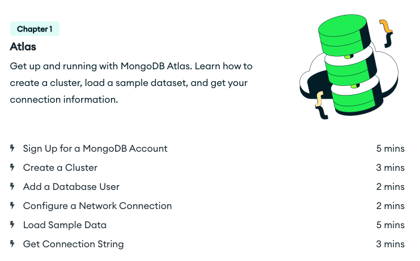
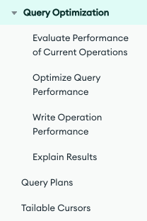

GUÍA PARA EL DISEÑO DE ESPACIOS ACADÉMICOS EN MODALIDAD VIRTUAL
Apreciado autor, por favor diligencie esta ficha a partir de las indicaciones que se dan dentro del documento las cuales sirven para la elaboración de ambientes de aprendizaje en modalidad e-learning (virtual).
Nota: toda la información en gris dentro de cada celda a lo largo de la guía corresponde a explicaciones de lo que se debe escribir, por lo que la puede borrar una vez comprenda el objetivo de cada segmento.
INFORMACIÓN GENERAL DEL ESPACIO ACADÉMICO | |
Unidad académica/administrativa | Facultad de Ingeniería |
Programa(s) | Ingeniería de Software |
Nombre del espacio académico | Bases de datos II |
Créditos | 3 créditos |
Asesor(a) tecnopedagógico (a) | |
Adecuador(a) pedagógico(a) (lo completa DEE) | |
Fecha elaboración | 5 de septiembre de 2023 |
Fecha actualización | |
Autor(es) del diseño del espacio académico (modalidad e-learning) | |
Nombres y Apellidos | Jhon Alexis Mendez Lara |
Perfil profesional (máx. 200 palabras) de cada autor | Formación académica y experiencia en el desarrollo de software. Magíster en Ingeniería de Sistemas y Computación de la Universidad Nacional de Colombia, Especialista en Ingeniería de Software de la Universidad Distrital Francisco José de Caldas y Profesional en Ingeniería de Sistemas de la Universidad Autónoma de Colombia. Más de 12 años de experiencia en el sector productivo y 10 años en el sector educativo, participación en proyectos de software en el sector público y privado. Integración de sistemas en entornos móviles y web. Investigación en educación en ingeniería, aprendizaje colaborativo, computación gráfica y desarrollo de frameworks. |
Link al CVLAC (u otro enlace a su de hoja de vida en línea) | https://scienti.minciencias.gov.co/cvlac/visualizador/generarCurriculoCv.do?cod_rh=0000078562 |
Foto del perfil | |
Datos de contacto | |
Correo electrónico | |
OPCIÓN METODOLÓGICA DEL ESPACIO ACADÉMICO (redacción dirigida al estudiante)
El espacio académico Bases de Datos II cuenta con un énfasis teórico - práctico, por lo que la metodología del curso se centra en “Aprendizaje basado en proyectos”. Por esta razón a lo largo del curso encontraremos actividades como resolución de problemas, resolución de casos, talleres de práctica y un proyecto integrador.
Bienvenidos al espacio académico Bases de Datos II. El sentido de este espacio es permitir el desarrollo de la capacidad para determinar la configuración, administración y optimización de sistemas gestores de bases de datos documentales.
Para lograr esta meta de aprendizaje, el curso se encuentra organizado en 3 unidades de estudio. La primera unidad busca mostrar una introducción a las bases de datos no estructuradas, así como el modelado y diseño de las estas. La segunda unidad busca presentar el proceso de creación de bases de datos documentales haciendo uso de un motor o sistema de gestión de base de datos; adicionalmente, dar a conocer las principales consultas (querys) que podemos realizar sobre estas herramientas de almacenamiento. Y, finalmente, la tercera unidad busca conocer cómo relacionar las diferentes colecciones mediante índices; como complemento, se aplicarán estos conocimientos en la integración de un motor de bases de datos con un lenguaje de programación.
Con estos elementos el curso te aportará al desarrollo de la competencia del programa:
PLAN DE FORMACIÓN DEL ESPACIO ACADÉMICO (clic para ver ejemplos) | |||||
Unidad | Resultados | Contenidos de la unidad | Nombre de las actividades | Semanas de aprendizaje | % de nota **** |
Unidad 1: Introducción a las bases de datos no estructuradas
| - Comprender el concepto de bases de datos documentales. - Identificar ventajas y desventajas de las bases de datos documentales. - Comparar bases de datos documentales con bases de datos relacionales. - Diseñar un esquema de datos conceptual y lógico para una base de datos documental. - Realizar práctica de diseño de bases de datos documentales utilizando un escenario dado. |
| Encuentro virtual 1. Introducción al curso Descripción: aspectos y alcance del curso, reconocimiento de los módulos y sus temas. Repaso de lo visto en Bases de datos I | Semana 1 | - |
Actividad 1. Ventajas y desventajas de las bases de datos documentales Producto: Foro sobre las ventajas y desventajas de las bases de datos documentales. | Semana 1 | 12,5% | |||
Encuentro virtual 2. Diseño de bases de datos documentales Descripción: E xplicación práctica sobre el diseño y creación de bases de datos documentales. | Semana 2 | - | |||
Actividad 2. Taller “Caso de estudio sobre bases de datos documentales” Producto: Diseño de una base de datos documental | Semana 2 y 3 | 12,5% | |||
Actividad 3. Evaluemos lo aprendido en la unidad 1 Producto: cuestionario sobre los conceptos básicos delas bases de datos documentales | Semana 4 y 5 | 12,5% | |||
Unidad 2: Creación y uso de bases de datos documentales
| - Crear e implementar una base de datos documental utilizando un sistema de gestión como MongoDB o Firebase Realtime DB. - Diseñar consultas para recuperar información específica de una base de datos documental. |
| Encuentro virtual 2. Recorrido por la Unidad 2 Descripción: se explicará de manera general los temas de la unidad y se aclararán dudas que puedan presentarse sobre el desarrollo del curso | Semana 6 | - |
Actividad 4. Creación de bases de datos documentales Producto: Taller creación de bases de datos documentales. | Semana 6, 7 y 8 | 12,5% | |||
Actividad 5. Consultas (querys) en bases de datos documentales Producto: Taller querys en bases de datos documentales. | Semana 9 y 10 | 12,5% | |||
Unidad 3: Integración y rendimiento de bases de datos documentales
| - Seleccionar estrategias de optimización de consultas adecuadas para mejorar el rendimiento de una base de datos documental. - Integrar una base de datos documental con aplicaciones web y de escritorio utilizando lenguajes de programación como Python, Java o .NET. |
| Encuentro virtual 3. Recorrido por la Unidad 3 Descripción: se explicará de manera general los temas de la unidad y se aclararán dudas que puedan presentarse sobre el desarrollo del curso | Semana 11 | - |
Actividad 6. Estrategias de optimización para querys Producto: Elaboración de video sobre la selección de estrategias para optimizar querys | Semana 11 y 12 | 12,5% | |||
Actividad 7. Integración de bases de datos documentales Producto: Taller: integración de un lenguaje de programación con una base de datos documental | Semana 13 y 14 | 12,5% | |||
Actividad 8. Entrega del proyecto final Producto: Informe sobre el diseño y la creación de una solución de software conectado a una base de datos documental | Semana 15 y 16 | 12,5% | |||
Encuentro virtual 4: cierre del curso Descripción: evaluación de percepción del curso | Semana 16 | ||||
* Relacione los resultados de aprendizaje que le entregó la dirección del programa o que aparecen en el syllabus. Si no se cuenta con esta información formúlelos teniendo en cuenta los niveles de pensamiento (Crear, Aplicar, Evaluar, Analizar y Comprender), en la siguiente estructura: Verbo (acorde al nivel de pensamiento elegido) – Objeto de conocimiento y Condición de calidad, contexto de aplicación o el para qué del aprendizaje.
**Procure considerar entre 2 y máximo 3 actividades por unidad de estudio, estas actividades no consideran los encuentros virtuales. Importante contar con una evaluación de conocimiento al cierre del curso, esta evaluación es obligatoria solo en cursos de pregrado.
***Tenga en cuenta que las asignaturas de pregrado se diseñan con una duración de 16 semanas (excepto las asignaturas de 2 créditos o menos, las cuales se programan a 8 semanas) y las de posgrado 9 semanas.
****Indique el valor (porcentaje) que cada actividad tendrá sobre la nota final. Tenga presente que ninguna actividad debe superar el 30%. Es importante que la suma de todos los porcentajes sea igual a 100%. Complete con un “-” las actividades que no sean evaluables.
*****Numere y nombre los encuentros virtuales que se desarrollarán a lo largo de cada unidad de aprendizaje. Tenga en cuenta que se debe desarrollar mínimo 1 encuentro por cada unidad, uno al inicio y uno al cierre del curso. Sin embargo, puede precisar de un mayor número de encuentros, si lo desea.
Aquí finaliza el avance 1
Aquí inicia avance 2 UNIDAD DIDÁCTICA 1: Introducción a las bases de datos no estructuradas | |||||||||||||
Descripción general | |||||||||||||
Resumen | En esta unidad comprenderemos el concepto de bases de datos documentales, identificando sus ventajas y desventajas respecto a las bases de datos estructuradas o relacionales. Adicionalmente, aprenderemos cómo hacer un diseño de un esquema de datos conceptual y lógico para este tipo de bases de datos. | ||||||||||||
Preguntas orientadoras |
| ||||||||||||
Detalles de la Unidad | |||||||||||||
ACTIVIDADES DE APRENDIZAJE (redacción dirigida al estudiante) | |||||||||||||
ACTIVIDAD 1: Ventajas y desventajas de las bases de datos documentales | |||||||||||||
¿Qué vamos a lograr?
| |||||||||||||
¿Cómo lo vamos a lograr? Apreciado estudiante, A través de esta actividad de manera individual vamos a participar en el foro denominado “Ventajas y desventajas de las bases de datos documentales”. Para iniciar, revisa atentamente los siguientes materiales:
Luego de haber revisado los materiales, procede a desarrollar las siguientes preguntas en el foro
Reglas de participación:
| |||||||||||||
¿Cómo lo vamos a evaluar? No aplica para cuestionarios o juegos. Considere criterios de forma (organización de la información, fuentes de consulta, investigación, respeto a las posturas de los demás, comunicación de ideas, etc.) y de fondo (elementos que den cuenta del objetivo de la actividad). Plantear los criterios de evaluación a partir del siguiente organizador:
| |||||||||||||
Información para el equipo de producción de la DEE | |||||||||||||
Herramientas de la plataforma virtual (Marque con una X solo si conoce la herramienta a utilizar):
Herramientas web externas a la plataforma [Puede consultar algunas herramientas en https://h5p.org/h5p/embed/123342] Indique si utilizará alguna____________ | |||||||||||||
Lecturas complementarias
| |||||||||||||
ACTIVIDAD 2: Caso de estudio sobre bases de datos documentales | |||||||||||||
¿Qué vamos a lograr?
| |||||||||||||
¿Cómo lo vamos a lograr? Apreciado estudiante, A través de esta actividad de manera grupal vamos a diseñar una base de datos documental a partir del siguiente caso de estudio: Descripción del Caso: Imagina que estás trabajando en el diseño de una plataforma de redes sociales similar a Twitter o Instagram. Esta plataforma debe ser capaz de manejar grandes volúmenes de datos en tiempo real, como publicaciones de usuarios, comentarios, me gusta y seguimiento de usuarios. Dado que la escalabilidad y la velocidad son cruciales, se decide utilizar una base de datos NoSQL para este proyecto. Requisitos Iniciales:
Para iniciar revisa atentamente los siguientes materiales:
Luego de haber revisado los materiales y el caso propuesto, entregar:
Nota: revisar atentamente la ortografía y resolución de las imágenes. | |||||||||||||
¿Cómo lo vamos a evaluar?
| |||||||||||||
Información para el equipo de producción de la DEE | |||||||||||||
Elija la Herramienta de la plataforma virtual para el diseño de la actividad (Marque con una X):
| |||||||||||||
Lecturas complementarias Medrano Aitor, Modelado de datos NoSQL, IABD: https://aitor-medrano.github.io/iabd2223/sa/03modelado.html
| |||||||||||||
ACTIVIDAD 3: Evaluemos lo aprendido en la unidad 1 | |||||||||||||
¿Qué vamos a lograr?
| |||||||||||||
¿Cómo lo vamos a lograr? Apreciado estudiante, A través de esta actividad de manera individual vamos a resolver el cuestionario propuesto. Repasar lo visto en el encuentro virtual 1 La información de las siguientes preguntas fue extraída de: Sarasa, A. (2016). Introducción a las bases de datos NoSQL usando MongoDB.. Editorial UOC. https://elibro-net.hemeroteca.lasalle.edu.co/es/lc/lasalle/titulos/58524 Pregunta 1: ¿Cuál de los siguientes es un tipo de modelo de datos NoSQL? Documental (x) Relacional Entidad Relación Parametrizada Pregunta 2: ¿Cuál de los siguientes es un beneficio de utilizar un modelo de datos de documentos? Flexibilidad (x) Integridad referencial Portabilidad Mantenibilidad
Pregunta 3: ¿Cuál de los siguientes es un beneficio de utilizar un modelo de datos de clave-valor? Escalabilidad (x) Integridad referencial Indexación Tolerancia a fallos Pregunta 4: ¿Cuál de los siguientes es un factor a tener en cuenta al elegir un modelo de datos NoSQL? El tipo de datos que se van a almacenar (x) Normalización Tener un sistema estándar y unificado Manejo de datos en menores escalas
Pregunta 5: ¿Cuál de los siguientes factores es una limitante de una bases de datos relacional? Impedancia (x) Integración Concurrencia Persistencia de datos Pregunta 6: ¿Cuál de las siguientes definiciones corresponde al concepto de Documento en MongoDb? Unidad básica de organización de información (x) Un registro de información Un atributo de una tabla Una colección de datos Pregunta 7: ¿En qué se diferencian los modelos de datos de documentos y los modelos de datos de clave-valor? Los modelos de datos de documentos almacenan los datos en documentos, mientras que los modelos de datos de clave-valor almacenan los datos en pares de clave-valor. (x) Los modelos de datos de documentos son más eficientes que los modelos de datos de clave-valor. Los modelos de datos de documentos son más flexibles que los modelos de datos de clave-valor. Los modelos de datos de documentos son más escalables que los modelos de datos de clave-valor. Pregunta 8: ¿Por qué se utiliza la normalización en el modelado de datos relacionales, pero no en el modelado de datos NoSQL? En el modelado de datos relacionales, los datos se almacenan en tablas, que tienen una estructura fija. En el modelado de datos relacionales, la integridad referencial es importante. (x) En el modelado de datos relacionales, los datos se almacenan de forma flexible. En el modelado de datos relacionales, la escalabilidad no es importante.
Pregunta 9: ¿Qué es la desnormalización? Es un proceso que se utiliza para reducir la redundancia de datos. Es un proceso que se utiliza para mejorar la integridad referencial. Es un proceso que se utiliza para aumentar el rendimiento de las consultas. (x) Es un proceso que se utiliza para escalar una base de datos. Explicación: Pregunta 10: ¿Por qué se utiliza la desnormalización en el modelado de datos NoSQL? Porque los datos se almacenan de forma flexible. (x) Porque la integridad referencial es importante. Porque el rendimiento de las consultas no es importante. Porque la escalabilidad no es importante. Pregunta 11: ¿Cuál de los siguientes corresponde a un tipo de dato en Mongo? Array (x) Int Float Integer | |||||||||||||
¿Cómo lo vamos a evaluar?
| |||||||||||||
Información para el equipo de producción de la DEE | |||||||||||||
Herramientas de la plataforma virtual (Marque con una X):
Herramientas web externas a la plataforma [Puede consultar algunas herramientas en https://h5p.org/h5p/embed/123342] Indique si utilizará alguna____________ | |||||||||||||
Lecturas complementarias G. Deka, "Tutorial on NoSQL Databases," in 2015 3rd IEEE International Conference on Mobile Cloud Computing, Services, and Engineering (MobileCloud), San Francisco, CA, USA, 2015 pp. 1-3. doi: 10.1109/MobileCloud.2015.34 url: https://doi.ieeecomputersociety.org/10.1109/MobileCloud.2015.34
| |||||||||||||
UNIDAD DIDÁCTICA 2: Creación y uso de bases de datos documentales | |||||||||||||
Descripción general | |||||||||||||
Resumen | En esta unidad podrás conocer los conceptos asociados a la creación de bases de datos documentales haciendo uso de un sistema de gestión de bases de datos no estructuradas. De igual forma, desarrollarás habilidades de gestión de datos mediante el uso de diferentes consultas a los sistemas de gestión de bases de datos documentales. | ||||||||||||
Preguntas orientadoras | ¿Cómo construir una base de datos mediante un sistema de gestión de bases de datos documentales? ¿Cómo construir consultas (querys) para obtener información de una base de datos documental? | ||||||||||||
Detalles de la Unidad | |||||||||||||
ACTIVIDADES DE APRENDIZAJE (redacción dirigida al estudiante) | |||||||||||||
ACTIVIDAD 4: Creación de bases de datos documentales | |||||||||||||
¿Qué vamos a lograr? Desarrollar a través de un caso de estudio, la creación de una base de datos documental en la que se evidencie el uso de un motor de base de datos | |||||||||||||
¿Cómo lo vamos a lograr? Apreciado estudiante, A través de esta actividad de manera grupal vamos a crear una base de datos documental. Para iniciar, revisa atentamente los siguientes materiales:
Luego de haber revisado los materiales, procede a revisar el siguiente caso de estudio: Descripción: Imagina que estás trabajando en el desarrollo de un sistema de gestión para una biblioteca. La biblioteca necesita un sistema para realizar un seguimiento de sus libros, autores, usuarios y préstamos. Utilizarás MongoDB para almacenar y gestionar la información. Requisitos:
Como producto de la actividad entrega a través de este medio entregar:
| |||||||||||||
¿Cómo lo vamos a evaluar?
| |||||||||||||
Información para el equipo de producción de la DEE | |||||||||||||
Elija la Herramienta de la plataforma virtual para el diseño de la actividad (Marque con una X):
| |||||||||||||
Lecturas complementarias
| |||||||||||||
ACTIVIDAD 5: Consultas (querys) en bases de datos documentales | |||||||||||||
¿Qué vamos a lograr? Desarrollar a través de un caso de estudio diferentes consultas (querys) a una base de datos documental en la que se evidencie el uso de un motor de base de datos | |||||||||||||
¿Cómo lo vamos a lograr? Apreciado estudiante, A través de esta actividad de manera individual vamos a realizar diferentes consultas sobre una base de datos documental. Para iniciar, revisa atentamente los siguientes materiales:
Luego de haber revisado los materiales, procede a revisar el siguiente guía: Descripción:
 Nota: cargar el dataset sample-mflix https://www.mongodb.com/docs/atlas/sample-data/sample-mflix/
Como producto de la actividad entrega a través de este medio entregar: Un informe (formato .pdf) con la explicación de la base de datos creada, incluyendo los diferentes comandos usados para cada una de las operaciones solicitadas en la descripción de la guía. | |||||||||||||
¿Cómo lo vamos a evaluar?
| |||||||||||||
Información para el equipo de producción de la DEE | |||||||||||||
Herramientas de la plataforma virtual (Marque con una X):
Herramientas web externas a la plataforma [Puede consultar algunas herramientas en https://h5p.org/h5p/embed/123342] Indique si utilizará alguna____________ | |||||||||||||
Lecturas complementarias
| |||||||||||||
UNIDAD DIDÁCTICA 3: Integración y rendimiento de bases de datos documentales | |||||||||||||
Descripción general | |||||||||||||
Resumen | En esta unidad podrás conocer cómo mejorar el rendimiento de las bases de datos documentales, haciendo uso de estrategias que permitan optimizar las consultas (querys) que nos permiten obtener información. Asimismo, desarrollarás habilidades de integración de una base de datos documentales mediante el uso de un lenguaje de programación que permita obtener información mediante el uso de diferentes estructuras de datos y conectores. | ||||||||||||
Preguntas orientadoras | ¿Cómo optimizar las consultas de una base de datos documental? ¿Cómo integrar una base de datos documental con un lenguaje de programación? | ||||||||||||
Detalles de la Unidad | |||||||||||||
ACTIVIDADES DE APRENDIZAJE (redacción dirigida al estudiante) | |||||||||||||
ACTIVIDAD 6: Estrategias de optimización para querys | |||||||||||||
¿Qué vamos a lograr? Conocer las diferentes estrategias que permiten optimizar las consultas de una base de datos documental. | |||||||||||||
¿Cómo lo vamos a lograr? Apreciado estudiante, A través de esta actividad de manera grupal vamos a realizar una consulta sobre las diferentes estrategias de optimización de consultas de una base de datos documental. Para iniciar, revisa atentamente los siguientes materiales:
Luego de haber revisado el material, procede a revisar el siguiente guía: Descripción:

Como producto de la actividad entrega a través de este medio entregar:
| |||||||||||||
¿Cómo lo vamos a evaluar?
| |||||||||||||
Información para el equipo de producción de la DEE | |||||||||||||
Elija la Herramienta de la plataforma virtual para el diseño de la actividad (Marque con una X):
| |||||||||||||
Lecturas complementarias
| |||||||||||||
ACTIVIDAD 7: Integración de bases de datos documentales | |||||||||||||
¿Qué vamos a lograr? Implementar una conexión de una base de datos documental con un lenguaje de programación. | |||||||||||||
¿Cómo lo vamos a lograr? Apreciado estudiante, A través de esta actividad de manera individual vamos a realizar una conexión de una base de datos documental con un lenguaje de programación. Para iniciar, revisa atentamente los siguientes materiales:
Luego de haber revisado el material, procede a resolver el siguiente caso: Descripción: Crea una aplicación de gestión de notas que permita a los usuarios realizar las siguientes operaciones:
Requisitos Técnicos:
Como producto de la actividad entrega a través de este medio entregar:
| |||||||||||||
¿Cómo lo vamos a evaluar?
| |||||||||||||
Información para el equipo de producción de la DEE | |||||||||||||
Herramientas de la plataforma virtual (Marque con una X):
Herramientas web externas a la plataforma [Puede consultar algunas herramientas en https://h5p.org/h5p/embed/123342] Indique si utilizará alguna____________ | |||||||||||||
Lecturas complementarias
| |||||||||||||
ACTIVIDAD 8: Entrega del proyecto final | |||||||||||||
¿Qué vamos a lograr? Aplicar los conocimientos vistos durante el curso mediante la creación de una aplicación que haga uso de una base de datos documental. | |||||||||||||
¿Cómo lo vamos a lograr? Apreciado estudiante, A través de esta actividad de manera grupal vamos a desarrollar una aplicación, haciendo uso de su lenguaje de programación de preferencia, que permita resolver el siguiente caso de estudio Descripción: Desarrolle una aplicación de tienda que permita a los usuarios realizar las siguientes operaciones:
Nota: la aplicación puede ir local (app de escritorio) no es necesario hacer web. La interfaz puede ir por consola Requisitos Técnicos:
Puntos Adicionales (Opcional):
Como producto de la actividad entrega a través de este medio entregar:
| |||||||||||||
¿Cómo lo vamos a evaluar?
| |||||||||||||
Información para el equipo de producción de la DEE | |||||||||||||
Herramientas de la plataforma virtual (Marque con una X):
Herramientas web externas a la plataforma [Puede consultar algunas herramientas en https://h5p.org/h5p/embed/123342] Indique si utilizará alguna____________ | |||||||||||||
Lecturas complementarias MongoDB. (2023, 20 de julio). Cómo crear una cuenta de MongoDB Atlas. Recuperado de https://www.mongodb.com/docs/drivers/python/?utm_campaign=w3schools_mdb&utm_source=w3schools&utm_medium=referral | |||||||||||||